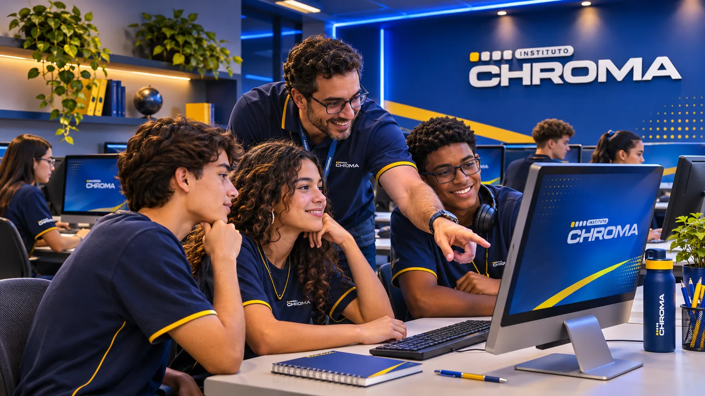

Aula assistida
O conteúdo é introduzido por explicações na plataforma, estabelecendo conceitos e objetivos.

Mais do que apresentar conteúdos, buscamos criar condições para que o estudante compreenda, aplique e desenvolva habilidades.
Estrutura orientada apresentada pela Chroma para uma hora de aprendizagem na plataforma de cursos.
O conteúdo é introduzido por explicações na plataforma, estabelecendo conceitos e objetivos.
Leitura, exercícios orientados e registro de um breve resumo do conteúdo estudado.
Atividades de prática para consolidar habilidades e preparar a avaliação.
Verificação da aprendizagem. A apresentação indica média 7 como critério de progressão.
As etapas descrevem a metodologia apresentada nas aulas inaugurais; formatos e regras podem variar conforme o programa e a atualização pedagógica.

Na proposta documentada da Nexus Corp, os estudantes simulam uma empresa e assumem funções ligadas às áreas que estudam. O projeto prevê currículos, entrevistas, equipes, setores, metas, tarefas e uma apresentação final.
O objetivo é praticar organização, comunicação, responsabilidade e colaboração em uma experiência orientada — uma simulação pedagógica, não uma empresa real em operação.
Conheça as iniciativas da ChromaAulas inaugurais e materiais pedagógicos descrevem atividades de preparação profissional e avaliação da aprendizagem.
Elaboração de currículo, simulação de entrevistas e preparação para processos seletivos, inclusive com prática de inglês em atividades específicas.
Desenvolvimento de expressão, colaboração, planejamento de responsabilidades e postura profissional.
O Trabalho de Conclusão de Módulo é apresentado como atividade orientada de verificação da aprendizagem ao final de uma etapa.
A Chroma descreve controle de frequência, reposições de atividades e possibilidade de agendamento de reforço com professores. O acompanhamento envolve orientação pedagógica, comunicação com responsáveis e identificação de dificuldades.
Os procedimentos detalhados e a disponibilidade de reposições devem ser consultados com a unidade, pois podem variar conforme o calendário e as regras vigentes.
Fale com o setor pedagógico